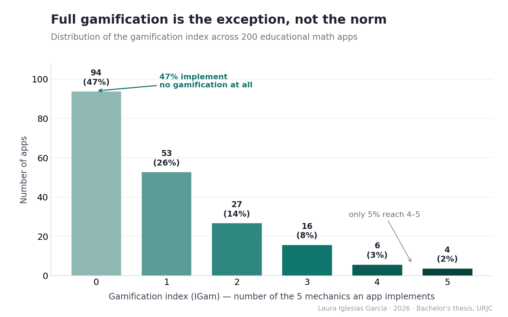
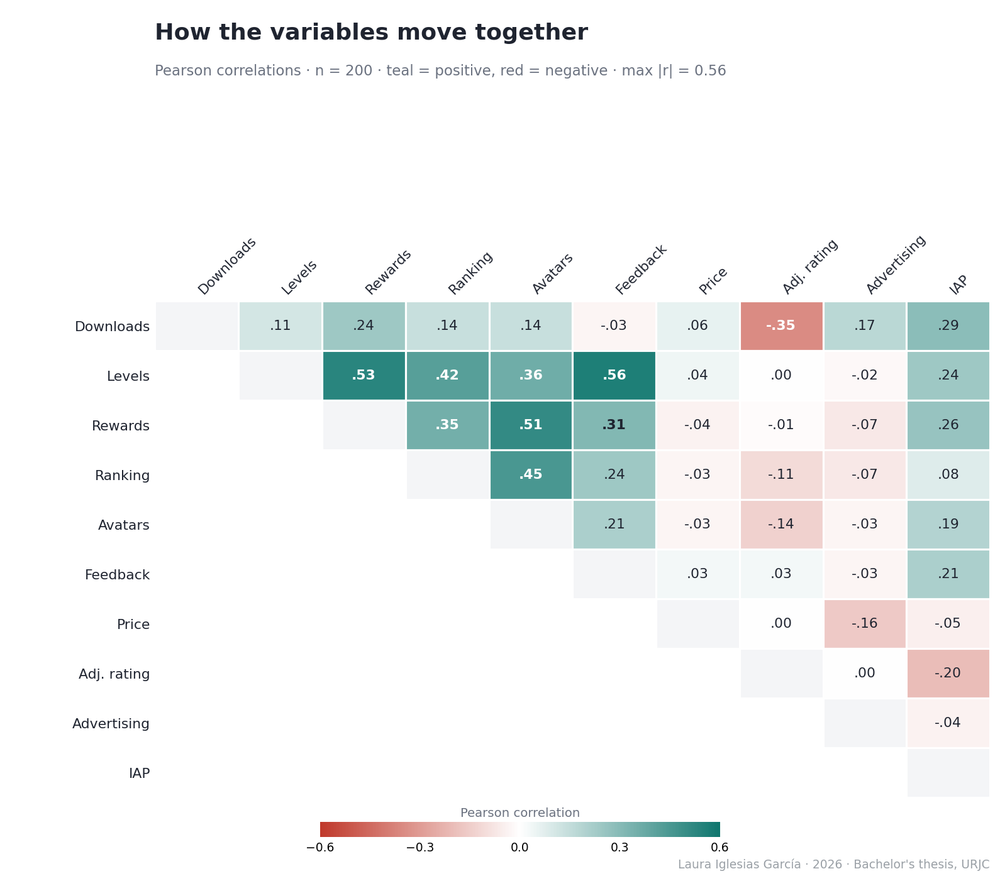
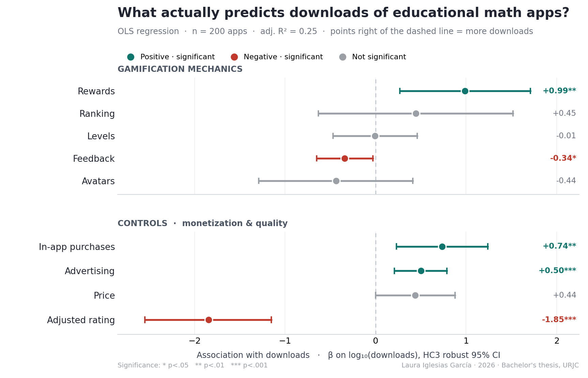

Gamification & Popularity of Educational Math Apps
An exploratory analysis of Google Play data in R
Which gamification features are associated with app downloads? An observational analysis of 200 educational mathematics apps, using regression, robust standard errors and sensitivity checks.
Using a stratified random sample of 200 apps drawn from 4,218 educational mathematics apps, I examined associations between gamification features and download counts. The analysis used multiple linear regression in R, HC3 robust standard errors, model diagnostics and sensitivity checks, including 1,000 bootstrap resamples. In Model I, rewards showed a positive association with downloads, while feedback showed a negative association. Levels, ranking and avatars did not reach the 5% significance threshold. In-app purchases and advertising were also positively associated with downloads. These observational findings do not establish that adding a feature increases downloads. Educational effectiveness was not measured.
Research question
Incorporating game mechanics (gamification) is one of the most common design responses in educational apps. But which mechanics, if any, are actually associated with popularity (downloads) of primary-school math apps on the Google Play Store? The analysis also discusses the limits of using store metrics to assess educational quality; learning outcomes were not measured.
This is an observational, cross-sectional study. All results describe statistical associations, not causal relationships.
Data & methods
| Stage | Detail |
|---|---|
| Source | Google Play Store Apps (Kaggle, gauthamp10, 2021), ~2.3M raw records |
| Cleaning | Deduplication, null handling, Rating Count > 0, numeric coercion |
| Target population | 4,218 educational math apps via a precision-oriented semantic keyword filter (validated recall gap ~6.4%) |
| Sampling | Stratified random sampling across four population quartiles of log10-downloads; n = 200, with 50 apps per stratum. The thesis reports stratum sizes of 1,054–1,055 apps and near-identical design weights (~21.09), motivating the use of unweighted OLS. |
| Coding | 5 binary gamification variables coded by manual interface inspection; the thesis reports mean Cohen’s kappa of 0.341 before reconciliation and 0.831 after reconciliation (30-app reliability subsample) |
| Model | OLS, log-level form; HC3 robust standard errors; Halvorsen-Palmquist correction for dummy variables |
| Diagnostics | VIF, Breusch-Pagan, Shapiro-Wilk + Q-Q, Cook’s distance |
| Robustness | Bootstrap (1,000 resamples), exact Fisher test, re-estimation without influential points, Bayesian-shrinkage hyperparameter sensitivity |
The five gamification mechanics: Levels, Rewards, Ranking, Avatars, Feedback. Controls: Price, adjusted Rating (Bayesian shrinkage), Advertising, In-app purchases (IAP).
The data at a glance
Before modelling, two patterns are worth seeing directly.


Key results: Model I (OLS, HC3 robust errors)

Dependent variable: log10(downloads). Sample: 200 apps. Adjusted R² = 0.248; F(9, 190) = 8.28, p < 0.001.
The table reports associations conditional on the other variables included in the model. Statistical significance is assessed at the 5% level.
| Predictor | β | p | Interpretation |
|---|---|---|---|
| Rewards | 0.986 | 0.008 | Positive association |
| In-app purchases | 0.736 | 0.005 | Positive association |
| Advertising | 0.501 | 0.001 | Positive association |
| Adjusted rating | -1.846 | <0.001 | Negative association |
| Feedback | -0.343 | 0.030 | Negative association |
| Levels | -0.006 | 0.979 | Not statistically significant |
| Ranking | 0.445 | 0.417 | Not statistically significant |
| Avatars | -0.436 | 0.315 | Not statistically significant |
| Price | 0.438 | 0.052 | Not statistically significant |
Interpreting the rewards coefficient
Rewards were the only gamification feature with a statistically significant positive coefficient in Model I. Feedback had a statistically significant negative coefficient.
Because the outcome uses a base-10 logarithm, the rewards coefficient corresponds to a multiplicative contrast of 10^0.986, approximately 9.7, on the back-transformed fitted scale, holding the included predictors constant.
This is a model-based association, not evidence that adding rewards would multiply an app’s downloads by 9.7. It should not be interpreted directly as a ratio of arithmetic mean downloads without additional retransformation assumptions.
The non-significant coefficients for levels, ranking and avatars do not establish that these features have no effect or that they are standard features shared by all successful apps.
What the model does not measure
Downloads describe reach or popularity. User ratings describe reported user evaluations. Neither directly measures learning outcomes or pedagogical quality.
The negative coefficient for adjusted rating therefore does not show that educational quality reduces popularity. Similarly, the feedback coefficient alone cannot establish that apps with feedback serve a particular type of audience.
Robustness and sensitivity of the rewards association
The following checks examine sensitivity to influential observations, resampling and selected modelling choices. They use the same underlying dataset and are not independent replications of the study.
| Check | Reported result | Interpretation |
|---|---|---|
| Excluding influential observations | β = 1.566, p < 0.001; adjusted R² = 0.322 | The positive association persists; its estimated magnitude increases |
| Bootstrap, 1,000 resamples | 95% coefficient interval [0.17, 1.64] | The interval excludes zero but indicates substantial uncertainty about magnitude |
| Fisher’s exact test: download stratum × rewards | p = 0.002 | Evidence of an unadjusted association between rewards and download stratum |
| Rating-shrinkage sensitivity: six m0 values | β ranges from 0.954 to 1.006; p < 0.01 throughout | The rewards coefficient remains similar across the six tested settings |
The Fisher test examines a different, unadjusted relationship; it does not validate the regression coefficient itself.
Together, these checks support the persistence of the positive rewards association under the tested conditions. They do not resolve unmeasured confounding, establish causality or guarantee that the result generalises beyond the analysed apps.
The code (illustrative)
The full, ordered scripts live in /R. Two representative excerpts:
Bayesian shrinkage estimator for perceived quality
vi <- apps$`Rating Count`; Ri <- apps$Rating
C <- mean(Ri, na.rm = TRUE)
m0 <- quantile(vi, 0.75, na.rm = TRUE)
apps$Rating_Adj <- (vi / (vi + m0)) * Ri + (m0 / (vi + m0)) * CModel I with HC3 robust standard errors
model_I <- lm(LogMaxInstalls ~ V_Niveles + V_Recompensas + V_Ranking +
V_Avatares + V_Feedback + Price + Rating_Adj +
ADS_bin + IAP_bin, data = apps)
coeftest(model_I, vcov = vcovHC(model_I, type = "HC3"))Takeaways
For product teams: the positive association between rewards and downloads provides a hypothesis for further investigation. It does not establish the return from adding rewards or changing an app’s monetisation model. Controlled experiments would be needed to evaluate those decisions.
For educators: download counts and user ratings should not substitute for direct evidence of learning, accessibility or suitability for a particular classroom.
For analysts: the interpretation depends on the outcome definition, sample, model specification and uncertainty. Robustness checks strengthen the assessment of an association within the tested conditions; they do not turn it into a causal effect.
Limitations and next steps
Portfolio commentary: the following synthesis and follow-up proposals clarify the scope of the reported findings; they are not additional analyses performed for the thesis.
This cross-sectional study measures associations at one point in time. Unmeasured differences between apps, such as age, marketing exposure or development resources, could influence the observed relationships.
A stronger follow-up would use longitudinal data, additional confounder measurements and experimental or credible quasi-experimental designs. Educational effectiveness would require separate learning-outcome measures.
Full written thesis (Spanish) in /report. Code under MIT license; data obtained from Kaggle (see /data).